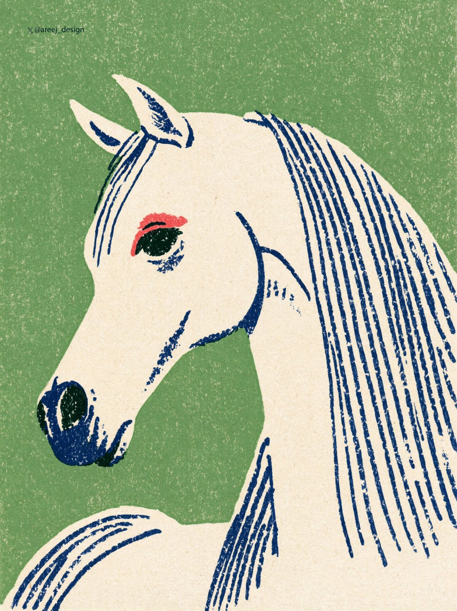
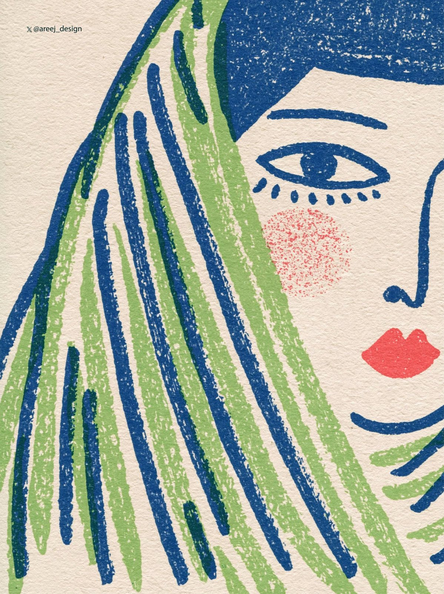
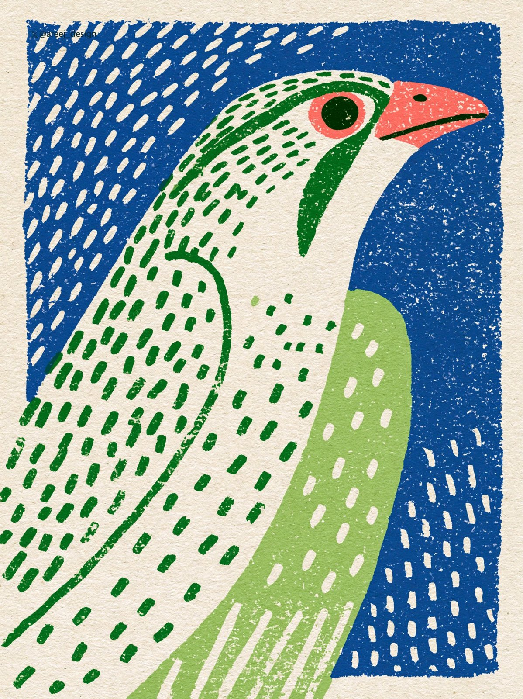

Green-Blue Riso Portraits
An Arab man, a white horse, a girl and a bird drawn in rough two-color green-and-blue risograph texture from a single sref.
| Creator | 🇸🇦 AREEJ AlTHAQAFI @areej_design |
|---|---|
| Platform | X |
| Model | Midjourney v8.2 |
| Likes | 390 |
| Posted | 2026-10-01 |
| Visual style | Watercolor storybook |
| Regional vibe | Other regions |
| Genre | Daily life |
| Mood | Heartwarming |
Prompt · from the post
--v 8.2 --sref 350198020